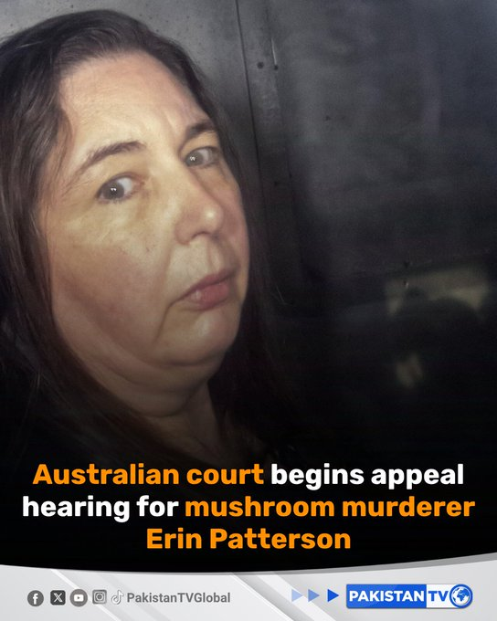
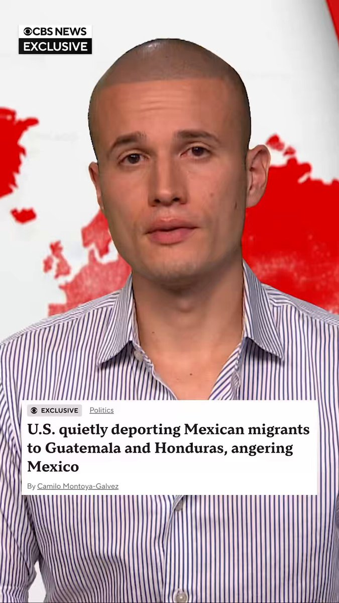
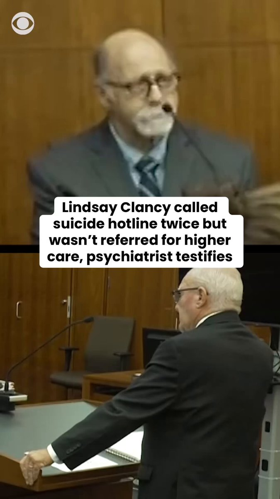
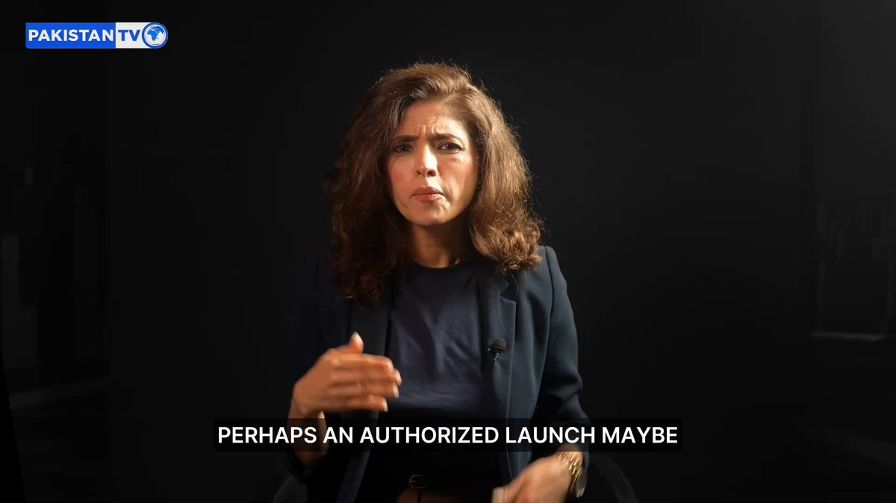
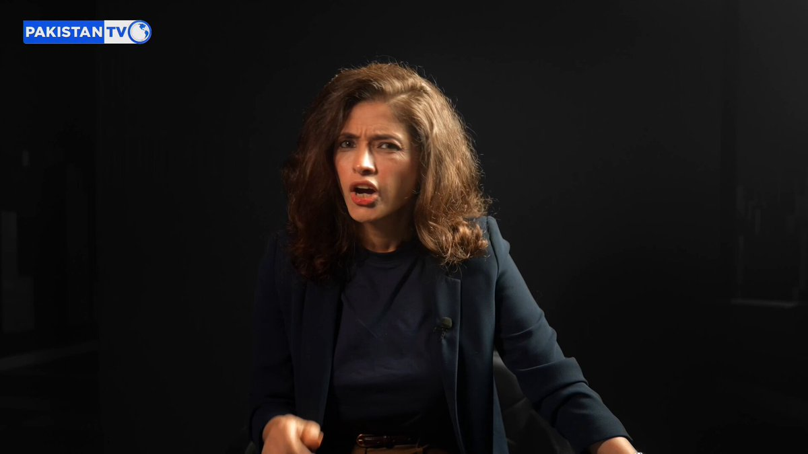
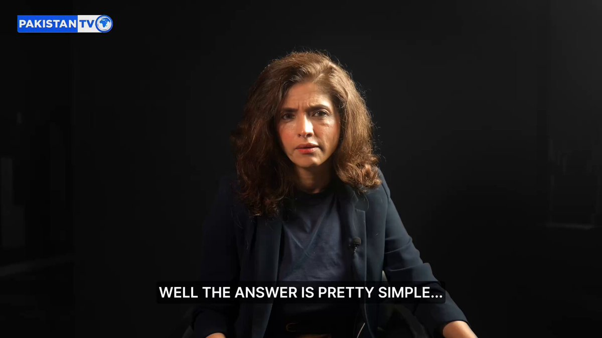
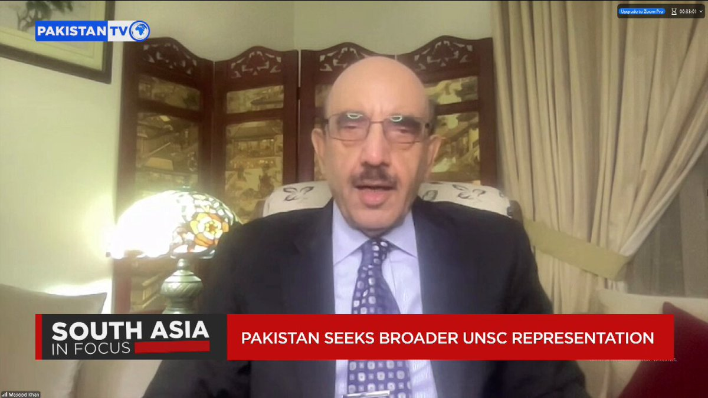

@CBSNews
📝 原文: Oliver Gilbert wins Democratic primary for Florida's 24th Congressional District; Jones concedes
🇨🇳 译文: 奥利弗·吉尔伯特 (Oliver Gilbert) 赢得佛罗里达州第 24 国会选区的民主党初选；琼斯承认

🕒 2026-08-19T03:50:15+00:00
| 来源 | 旧窗口内数量 | 本次新增 | 本次淘汰 | 当前窗口内共有 |
|---|---|---|---|---|
| 推文 + Dawn 新闻 | 0 | 31 | 0 | 31 |
| ARY News | 0 | 0 | 0 | 0 |
注：淘汰数 = 旧窗口内数量 + 本次新增 - 当前窗口内共有














暂无文章。